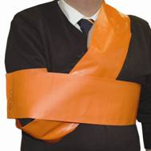
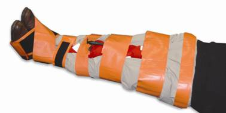

Frac straps
These can be utilised to immobilise limbs when treating for suspected fractures. For upper limb strapping there are no fixed rules but the aim should be to immobilise and pad for comfort.
For lower limb fractures six straps should be used with one at the ankle, knees, hips, and pelvis and one above and below the site of the fracture. Then a pad between the legs for comfort, e.g. survivors lifejacket, blanket rolled lengthways.

In casualty care we are not able to differentiate between sprains, strains and fractures. Therefore all injuries are to be suspected as fractures until proved otherwise.